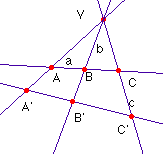
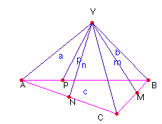
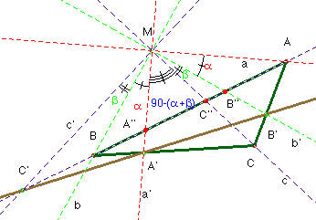

Solución Saturnino Campo Ruiz, profesor de Matemáticas del I.E.S. Fray Luis de León (Salamanca)
Problema 72.- Alineaciones
Sea ABC un triángulo en el plano afín euclídeo P. Sea M un punto cualquiera del plano.
Suponemos que:
- la perpendicular por M a la recta AM corta a la recta BC en A'.
- la perpendicular por M a la recta BM corta a la recta CA en B'.
- la perpendicular por M a la recta CM corta a la recta AB en C '.
Demostrar que los puntos A', B' C ' están alineados.

Nuestra solución se basa en la demostración de una propiedad para las seis rectas de un haz, que sólo depende de la posición que mantienen entre sí dichas rectas, y que, por tanto, se conserva al realizar proyecciones o secciones.En la figura adjunta para las rectas a, b y c concurrentes en V, y cortadas por una secante que determina los puntos ABC, aplicando el teorema de los senos podemos escribir: y también .
Dividiéndolas entre sí encontramos .
Es evidente que para la razón formada por sus proyecciones en otra recta no paralela se obtiene una razón diferente , por eso es más importante la razón doble que la simple, ya que esta última es invariante por proyecciones y secciones.

Si ahora disponemos de un triángulo ABC y otros tres puntos M, N y P, cada uno alineado con dos vértices y otro punto V no alineado con ninguna terna, como se indica en la figura, se tendrá procediendo como antes:. Tomamos otra razón simple con los puntos M, B y C. Se tendrá: , y para la determinada por N, C y A . Multiplicándolas entre sí, se eliminan las razones de las distancias al punto V, obteniendo así un invariante proyectivo para las rectas del haz que concurren en V.
.

Para demostrar que los puntos A’, B’ C’ están alineados, vamos a aplicar el teorema de Menelao al triángulo ABC. Es decir ver si vale +1 el siguiente producto:.
Proyectando desde M sobre la recta AB, el triple producto es igual a este otro:
, (*)
donde se ha designado como s a la recta que pasa por S y s’ a la que pasa por S’. Teniendo en cuenta que los ángulos de a,a’; b,b’; c,c’ son rectos, los restantes ángulos son áng(b’, a) = a; áng(c, b’)=b ; áng(a’, c)=90-(a+b); áng(b, a’)= a; áng(c’,b)=b. Sustituyendo en (*) tendremos que m = = .
En conclusión: los puntos A’, B’ y C ’ están alineados.